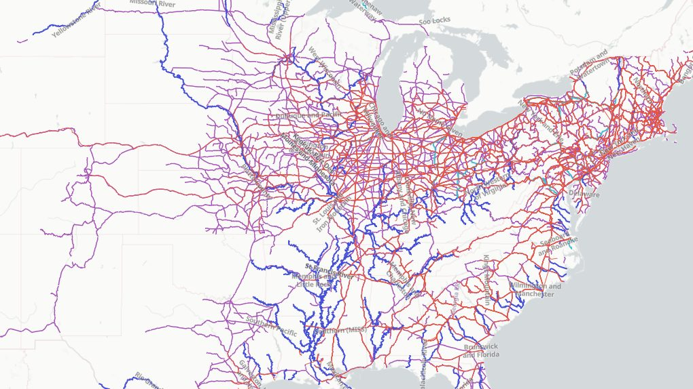

Home
Login
Map Portal
Curated maps and datasets to explore — and soon, to add straight into your own maps.

US Early Transportation: Railway and Water
☆
Railroads, canals and steamboat routes across the early United States, 1787–1911 — 16 layers with a timeline, plus today's rail network for comparison.
View
★ saves it to your Portal Bookmarks
More maps and datasets will appear here as the portal grows.